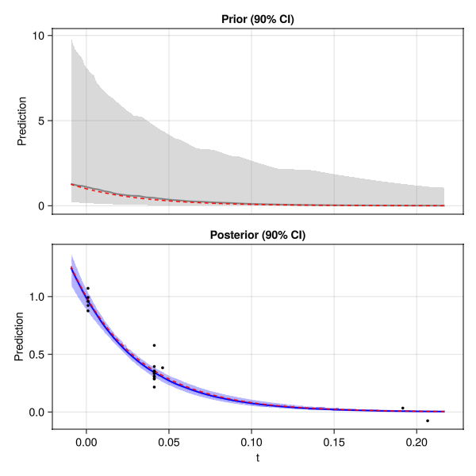
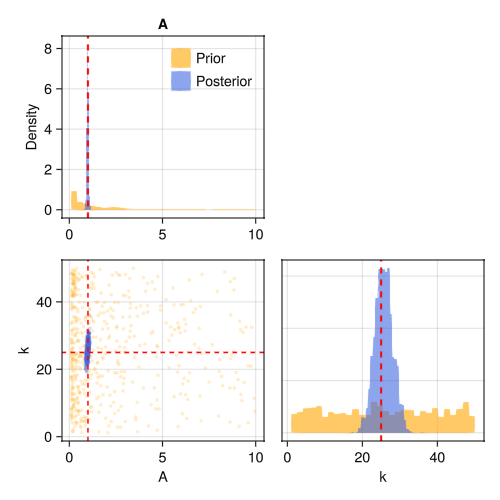

Quickstart
A complete worked example: design an experiment for an exponential decay, acquire simulated data, estimate the parameters, and visualise the results.
The model
An exponential decay with amplitude $A$ and rate $k$, observed with additive Gaussian noise:
\[y = A \exp(-k \, t) + \varepsilon, \qquad \varepsilon \sim \mathcal{N}(0, \sigma^2)\]
using OptimalDesign
using CairoMakie
using ComponentArrays
using Distributions
function model(θ, x)
θ.A * exp(-θ.k * x.t)
end
# Ground truth (unknown to the design algorithm)
θ_true = ComponentArray(A = 1.0, k = 25.0)
σ = 0.1The acquisition function
The acquire function is what gets called to make a measurement at a design point x. In a real experiment this would talk to your instrument; here we simulate by evaluating the model at the true parameters and adding noise:
acquire(x) = model(θ_true, x) + σ * randn()Setting up the design problem
A DesignProblem bundles the model, prior uncertainty on each parameter, and what we want to estimate. Here we want to estimate $k$ as precisely as possible, treating $A$ as a nuisance parameter:
prob = DesignProblem(
model,
parameters = (A = LogUniform(0.1, 10), k = Uniform(1, 50)),
transformation = select(:k),
sigma = Returns(σ),
)
candidates = candidate_grid(t = range(0.001, 0.5, length = 200))
prior = Particles(prob, 1000)Computing the optimal design
# create a design with 20 measurements
ξ = design(prob, candidates, prior; n = 20)ExperimentalDesign: 20 measurements at 5 support points
t=0.001 × 5 █████
t=0.0411 ×12 ████████████
t=0.0461 × 1 █
t=0.1916 × 1 █
t=0.2066 × 1 █
Running the experiment
result = run_batch(ξ, prob, prior, acquire)BatchResult: 20 observations from 5 support points
Mean: A=0.985, k=25.716
Std: A=0.051, k=2.423
ESS: 985.7Extracting estimates
The result carries both the original prior and the updated posterior. Use mean and std to summarise:
using Statistics
mean(result)ComponentVector{Float64}(A = 0.9851945197054837, k = 25.71568090456285)std(result)ComponentVector{Float64}(A = 0.050836484999531445, k = 2.4226855315862412)Visualising results
Credible bands show how the posterior prediction narrows compared to the prior:
plot_credible_bands(prob, result; truth = θ_true)
A corner plot shows the joint posterior over the parameters:
plot_corner(result; truth = θ_true)
Next steps
- Workflows — batch vs adaptive vs design-only
- Defining Problems — all the options for
DesignProblem - Batch Design example — full walkthrough with optimality checking and plots